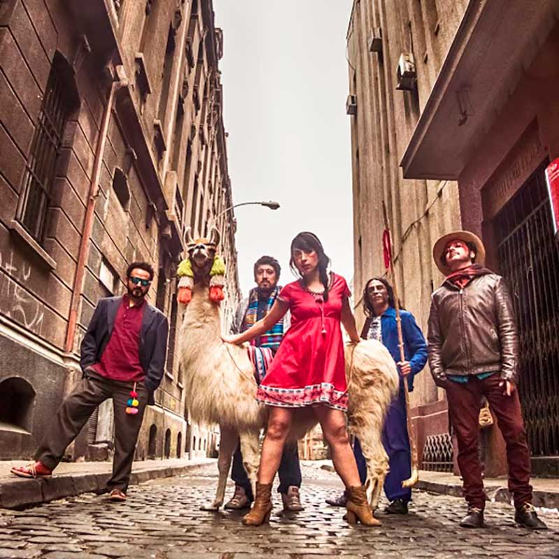

Seidú
CHILE
Los oriundos de La Ligua firmaron uno de los mejores discos chilenos de 2013.
“Mi abuela es Violeta Parra, mi abuelo es Jimi Hendrix”. La letra de Santa ascensión, una de las mejores canciones de su debut de 2013, sintetiza las aspiraciones de este conjunto oriundo de La Ligua y que encabeza Pablo Quezada: una irreverente mezcla de estilos, con una puesta en escena casi teatral y un repertorio que va del rock pesado a la electrónica pasando por el folclor andino, con letras de recursos poéticos y antipoéticos y gran influencia de la rima octosílaba, característica de la música de raíz. No es todo. En Seidú también hay refranes populares y sentido del humor, un bien escaso en la música chilena, pero que en este conjunto de naturaleza indescifrable termina por configurar un cóctel único y muy recomendable.